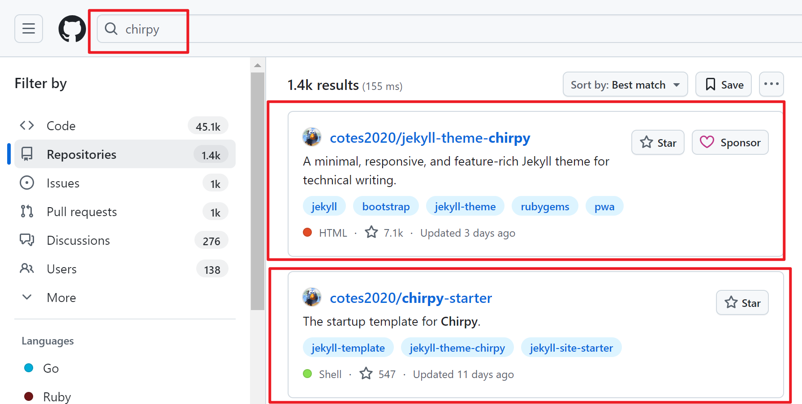
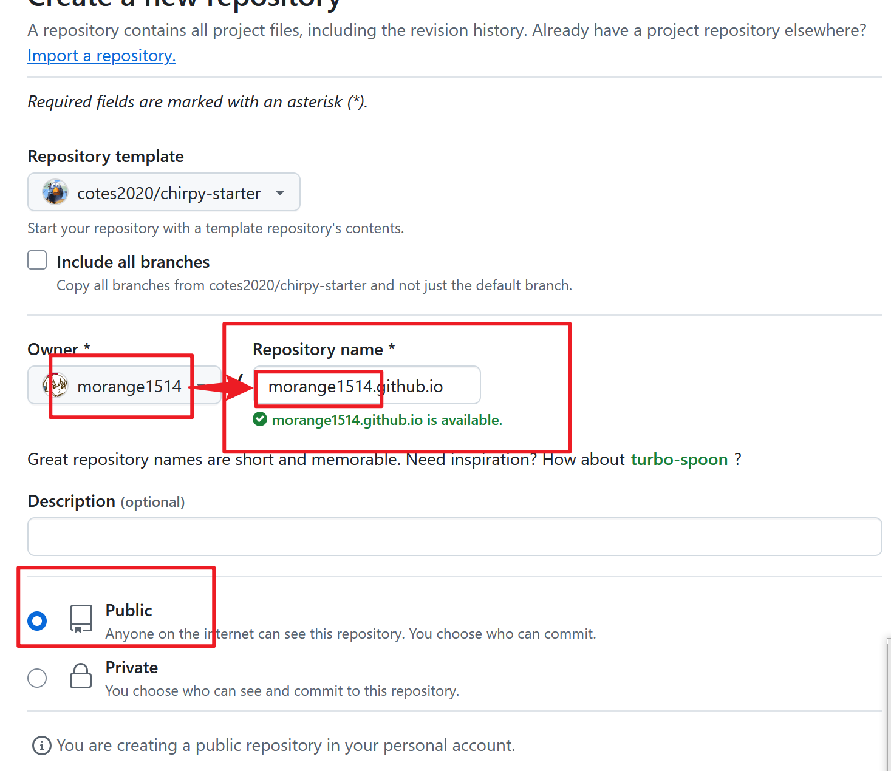
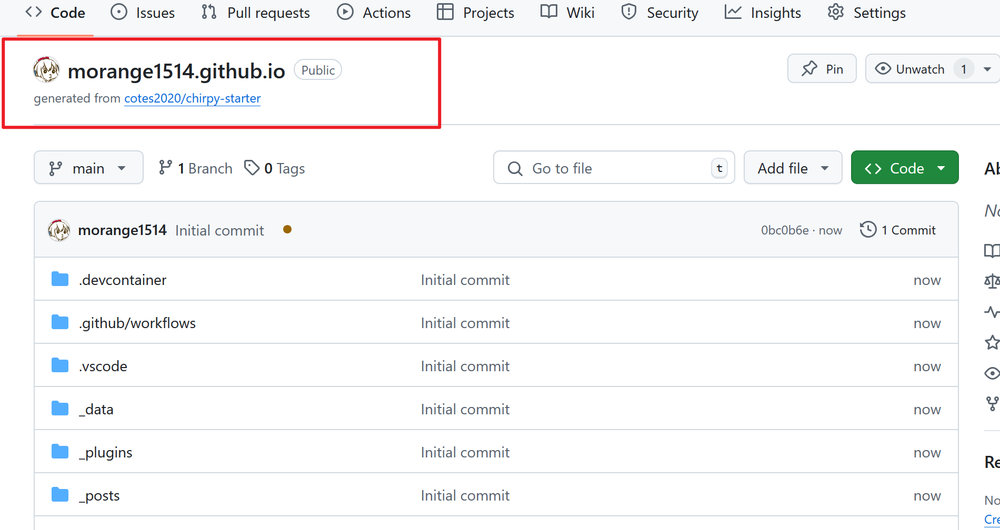
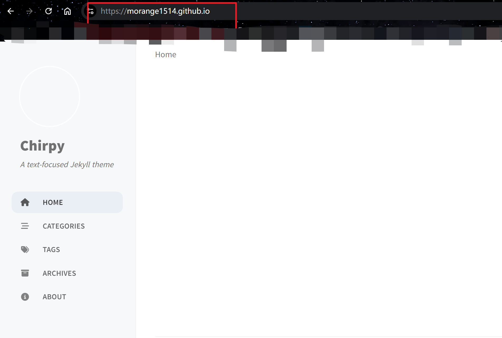
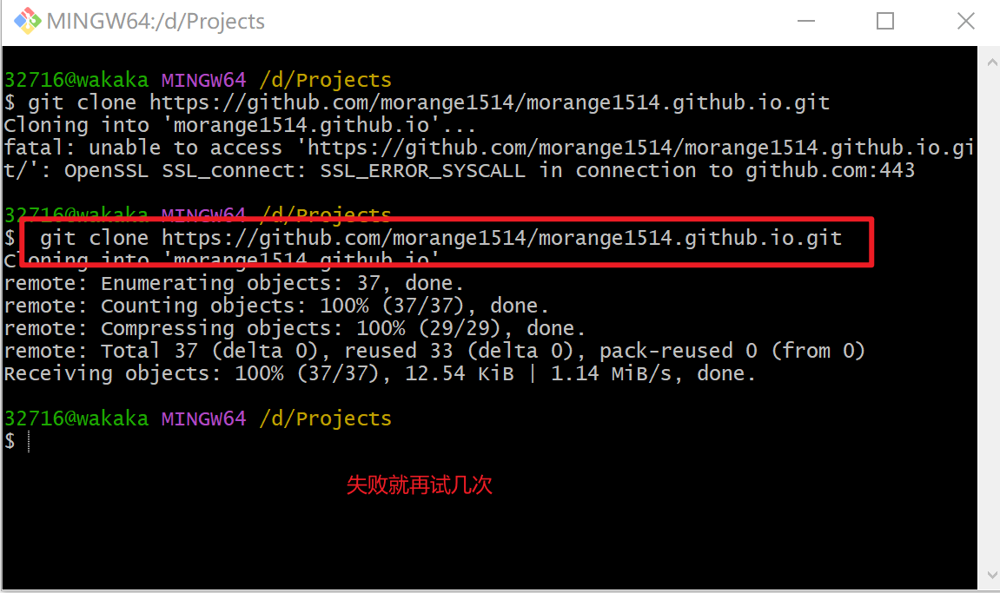
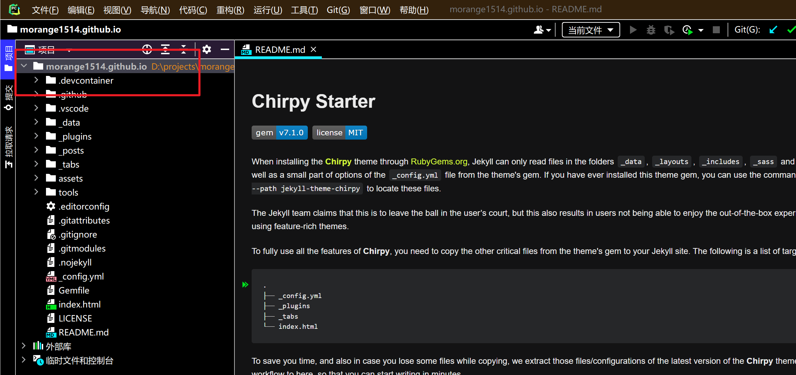
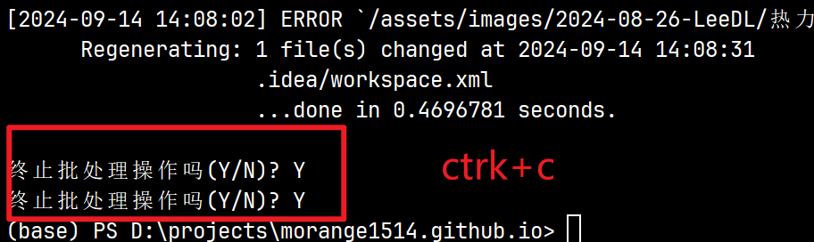
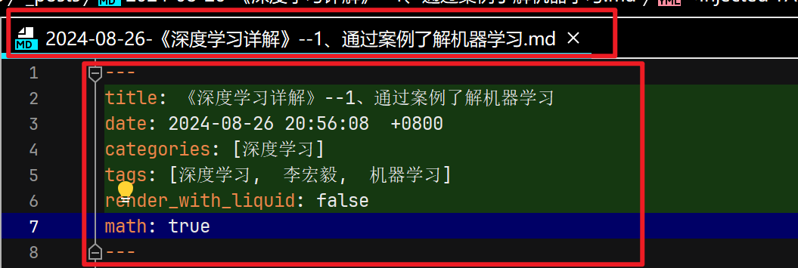
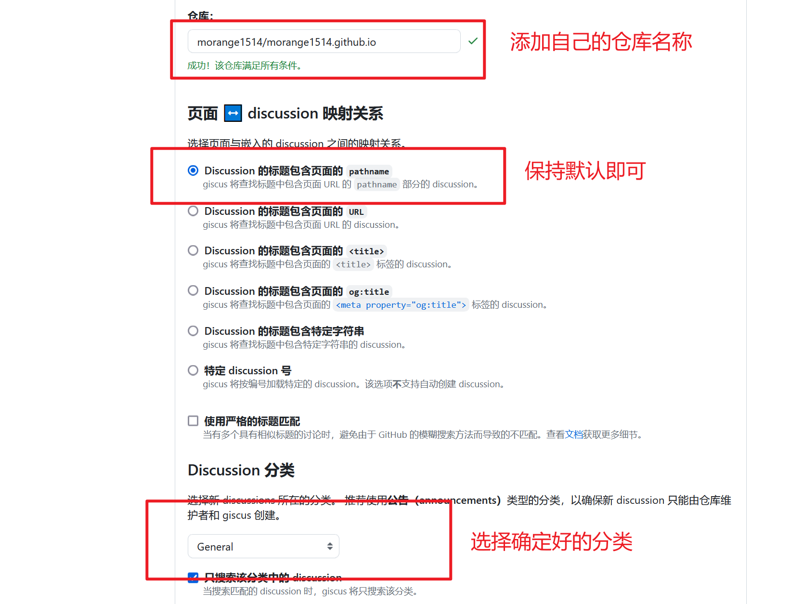

保姆教程如何创建自己的“个人网站”
如何创建自己的个人网站
文章主要介绍如何使用 Jekyll 和 GitHub 创建一个属于自己的个人网站，通过网站可以记录自己的学习笔记，技术收获，同时也可以更好地展示自己，养成笔记的好习惯（21天轻松养成好习惯，哈哈哈）。
0、放在开头的一些东西
Ruby安装教程 因为文章是后补的，文章中没有介绍Ruby的安装，安装教程可以参考前面的链接。
安装Ruby的目的是在本地运行代码，查看网站的效果，如果不需要本地运行可以不配置Ruby环境。
Jekyll模板网站 http://jekyllthemes.org/ 网站中包含了很多静态网的模板，大家可以自由选择，在本中文使用的是chirpy主题，所有模板的配置过程也都大差不差。 ### 1、使用GitHub创建自己的仓库 #### step 1 在GitHub中键入chirpy查找本教程使用的模板，上面的模板可以自行改动，大佬可以阅读源码创建自己的个人主页，下面的仓库操作比较简单，本文选择使用下面的模板，不进行修改，直接进行基础配置后可以进行使用。 
step 2
首先找到模板所在的GitHub仓库，在左上角找到“use this template”，然后选择其中的“Create a new repository”，用模板构建自己的仓库。 
step 3
进行仓库配置，首先需要创建自己仓库的名称，为了后续能够形成自己的个人主页，仓库名称需要设置为 “你的用户名”+“.github.io” ，这样可以通过https://username.github.io直接访问。然后需要将仓库的可见方式设置为Public（默认就是Public，不需要改动）。 
step 4
点击 “Create repository” 创建属于自己的仓库。 
step 5
等待仓库创建完成。 
step 6
仓库创建完成。这时候可以检查仓库的名称是否正确，防止后续不能正常显示网页。 
step 7
等待一段时间，GitHub配置完成后，在浏览器中输入 “username.github.io” 可以初步看到网页显示的效果，此时只有一个界面，很多配置还没有完成，能够正常显示就是初步成功。 
2、将仓库内容git到本地
为了能够更好配置网页，测试效果，后续配置和上传帖子，可以将项目git到本地进行配置
在本地运行Jekyll模板需要配置Ruby环境，配置流程可以参考上面的链接
当然，在GitHub直接进行修改也是可以的
获取git链接
在创建的仓库界面右上角点击 “code” ，选择HTTPS复制git链接。 
git到本地
进入想要下载的文件夹，右击选择 “Git Bash Here” 。 
在其中输入“git clone” + 刚在复制的git链接，将仓库git到本地吗，如果失败就多尝试几次，如果需要配置git可以找篇帖子看一下，都大差不差很好配置。 
IDE打开项目
文章选择使用pycharm打开项目。 
打开项目后可以右击查看到项目中有git选项，这是因为Pycharm识别到我们git的项目了，通过点选就能完成项目的添加、提交和推送。 
3、本地配置网站
安装配置
执行下方命令可以自动进行运行环境配置
bundle
在配置的过程中可能会出现错误，文章在配置过程中显示缺少wdm插件。 
安装wdm
gem install wdm
根据图片中显示安装的是0.2.0版本，而需要的是0.1.1版本，检查Gemfile文件修改其中wdm需要的版本即可。 
添加头像
项目中资源文件一般放在assets中，在assets中创建文件夹防止头像即可，头像的显示需要在配置文件中添加路径，记得本步骤的路径即可。 
配置文件修改
项目的基本配置都在 “_config.yml” 文件中，阅读文件根据需要配置即可。 其中有几个配置比较关键 > lang: 设置显示的语言，语言配置可以看这里，添加文件名就行。 > > description:网站的描述。 > > url: 改成你的网站地址”https://username.github.io” > > github:username: 改成自己的username > > social: 社交平台链接，根据需要修改 > > avatar：头像地址，改成上一步的地址即可 > > comments:评论系统配置，后面详细介绍

本地运行项目
配置完成后，执行下面命令运行项目，在 127.0.0.1:4000 查看运行结果。
bundle exec jekyll server 在运行的过程中可能也会出现错误，基本都是缺少插件或者插件的版本问题，哪里报错改哪里，缺啥补啥，直接复制报错信息，直接搜基本都能找到解决方法。
在运行的过程中可能也会出现错误，基本都是缺少插件或者插件的版本问题，哪里报错改哪里，缺啥补啥，直接复制报错信息，直接搜基本都能找到解决方法。
运行效果如下： 
结束运行： 首先ctrl+c，然后两次确定即可。 
添加文章
文章的添加在 “_post” 文件夹中即可，文件的命名格式和标头都有要求。 
文章命名格式为：YYYY-MM-DD-TITLE.md（注意是markdown文件）
标头格式为：
title: 题目名称
author: 作者名称
date: 项目创建时间
categories: 项目分类，如：[Jekyll, GitHub]
tags: 项目标签，如：[Jekyll, Github]
math: 是否显示latex公式
……
其他根据需要添加，可以阅读源码查看相应配置

4、提交修改
提交项目使用git进行控制，主要有三个过程：添加，提交和推送。由于使用了pycharm作为IDE，能直接通过点选完成。
右击项目，选择 “Git”，先点 “添加” ，然后点 “Commit目录” ，最后推送即可更新GitHub仓库中的内容。待内容更新完成可以在 “https://username.github.io” 查看更新效果。 
提交更新后效果如下： 
5、添加评论系统
在模板中配置了多种评论系统，文章中选择使用 “giscus”。
在添加前需要完成一个配置，在 “Pages” 中将source改成 “GitHub Actions”。 
安装giscus
在giscus中点击安装即可，可能需要GitHub认证，按照步骤操作即可。 
GitHub配置
在设置中将Discussions设置为true 
查看Discussions，可以选择或创建一个标签作为评论系统的评论类别名称。这里选择的是 “General”。 
giscus配置
在giscus中进行配置
- 首先配置仓库：username/username.github.io
- 然后选择映射关系，选择第一个，保持默认即可
- 选择Discussion分类，选择之前确定或创建的分类即可 
项目文件配置
在giscus配置完成后，会生成专属id 
在项目的 “_config.yml” 文件中进行相应配置
- provider: giscus
- giscus:
- repo: username/username.github.io
- repo_id: 自己的repo_id
- category: Comments
- category_id: 自己的category_id
- mapping: pathname

评论系统测试
将修改后的项目提交，在网页的文章最后能看到评论系统，需要GitHub登陆后才能提交评论 
6、关于创建过程中遇到的一些问题和解决方法
文章中使用的Jekyll模板作者设计的非常全面，我们在使用的过程中可能会遇到很多问题，本章节主要记录遇到的问题和解决方案
数学公式不显示的问题 在post编写的过程中可以使用latex写公式，GitHub也已经支持latex公式的显示，但提交的文章中公式还是源码。 在标头中设置“math: true”就可以 类似的问题可以查看源码，我之前一直以为作者没有添加公式识别功能，查看后才知道写了,需要在标头中进行设置。源码地址
黑白两种主题不能切换的问题 缺少必要插件，具体少那个可以自己查查，我忘了
插件安装报错wdm，在Gemfile中写的是0.1.1版本，实际安装过程中执行“bundle”命令安装的是0.2.0版本，吧Gemfile文件中的版本号改一下就行。 遇到其他插件报错的时候也可以参考这个方法
项目识别不了http链接，可能是出于安全考虑吧 原本是”[xxx] (http://xxx/xxx)“，不能识别http协议，链接直接写就行，不然提交后会在Actions中报错。